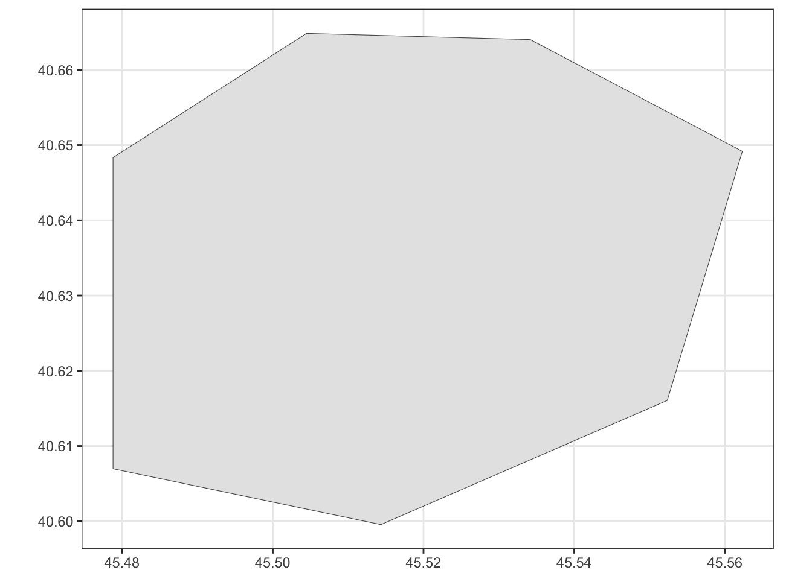
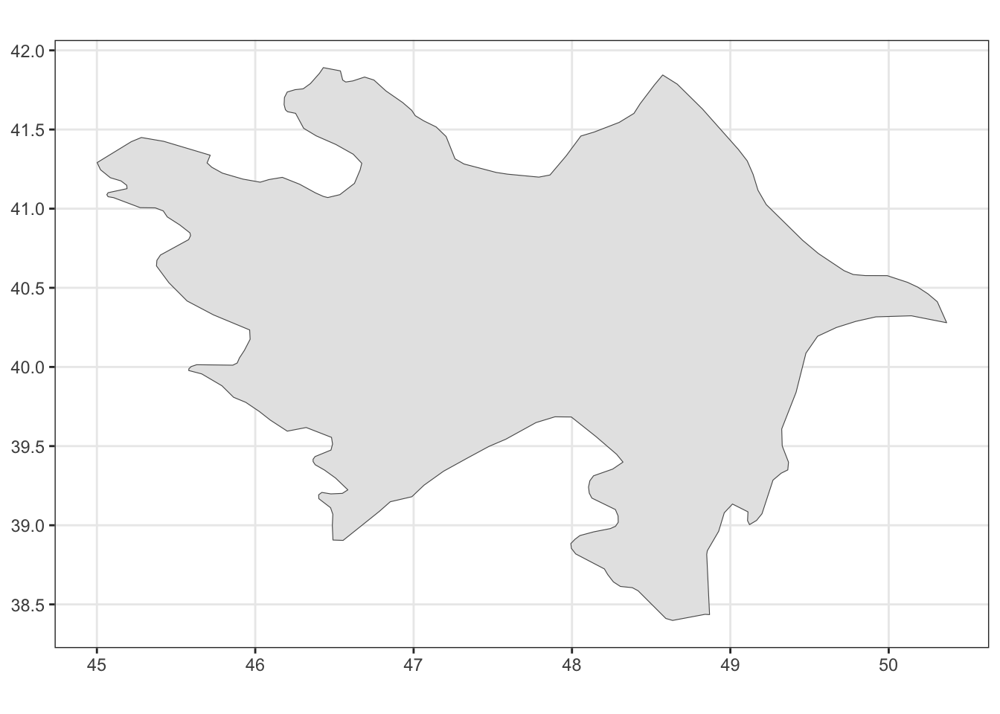
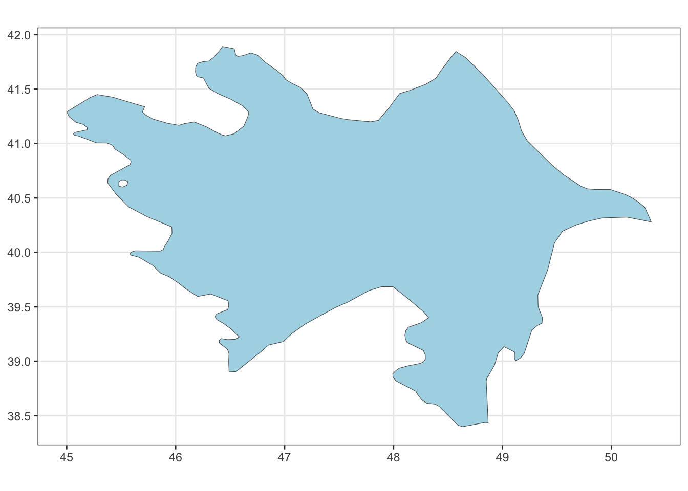

library(tidyverse)
library(sf)
library(mapview)
library(rnaturalearth)
library(viridis)
library(spdep)
library(sfdep)
library(spatstat)
library(terra)
library(stars)R Coding Workshop: 7th Meeting
GIS & Geospatial Data Analysis (Fall 2025)
R Coding Workshop for GIS: 7th Meeting
Goals for Today
- Review R fundamentals
- Walk through the R workflow for (geospatial) data analysis
- Make sense of objects and functions in R
- Move back and forth with
df,sf,ppp - Intro to control flow (
ifandcase_when)
Review
The Workflow 1: Setting up the Environment
- select a working environment and explore their features(Positron, Jupyterhub)
- Open your .qmd file or create one
R Session
- Use
getwd()andsetwd()to get information about working directory the or set them manually to tell R where to look for files during this session
getwd()
setwd('~/myfolder')- Use the
library()function to load the packages for our R session.
The Workflow 2: Preparing Data objects
uni_df <- tibble::tribble(
~university, ~year, ~current_country, ~lat, ~lon, ~exist_today,
"Paris", 1150, "France", 48.8566, 2.3522, TRUE,
"Salerno", 1173, "Italy", 40.7711, 14.7905, TRUE,
"Reggio", 1188, "Italy", 44.6450, 10.9277, TRUE,
"Oxford", 1190, "United Kingdom", 51.7520, -1.2576, TRUE,
"Bologna", 1200, "Italy", 44.4989, 11.3275, TRUE
)
# uni_df
uni_sf <- uni_df |>
st_as_sf(
coords = c('lon','lat'),
crs = 4326
)
# uni_sf |> mapview(label = 'university')
uni_sfc <- uni_sf |> pull(geometry)book_challenge_df <- read_csv('data/book-challenge11.csv')Rows: 931 Columns: 17
── Column specification ────────────────────────────────────────────────────────
Delimiter: ","
chr (3): title, author, state
dbl (13): book_id, year, removed, explicit, antifamily, occult, language, l...
date (1): date
ℹ Use `spec()` to retrieve the full column specification for this data.
ℹ Specify the column types or set `show_col_types = FALSE` to quiet this message.ne_vars <- c("geounit", "pop_est", "pop_rank", "pop_year", "gdp_md", "gdp_year", "economy", "income_grp", "iso_a2", "continent", "region_un", "subregion", "region_wb")
cca_sf <- ne_countries(
country = c(
"Kazakhstan", "Kyrgyzstan", "Tajikistan", "Turkmenistan", "Uzbekistan", "Armenia", "Azerbaijan", "Georgia"),
scale = 50) |> select(any_of(ne_vars))
cca_sfc <- cca_sf |> st_geometry()azerbaijan_sf <- cca_sf |> filter(iso_a2 == 'AZ')
azerbaijan_sfc <- azerbaijan_sf |> st_geometry()georgia_sf <- cca_sf |> filter(iso_a2 == 'GE')cca_nb <- cca_sf |> st_contiguity()Warning in spdep::poly2nb(geometry, queen = queen, ...): neighbour object has 2 sub-graphs;
if this sub-graph count seems unexpected, try increasing the snap argument.cca_listw <- cca_nb |> st_weights()3. Finding Help: read function documentations
Ways to access function documentation:
- Add a question mark in front of the function name:
?func_name
?mutate??"aggregate"- Use the
help()function
help('mutate')help('filter', package = 'dplyr')- If you are interested in the what are the arguments that the function can take, use
args()to check
moran |> class() |> print()[1] "function"args(moran)function (x, listw, n, S0, zero.policy = attr(listw, "zero.policy"),
NAOK = FALSE)
NULL- Simply, hover over the function name!
'Try hover over a function in your code!' |> print()[1] "Try hover over a function in your code!"A closer look at the data structure of an df object
class()function tells us thatuni_dfis a “data.frame” object data object with an additional class `“tbl_df”typeof()call shows the storage mode ofuni_df, which is list
uni_df |> class() |> print()[1] "tbl_df" "tbl" "data.frame"uni_df |> typeof() |> print()[1] "list"- describe and extract attributes of a df object using
dim()andcolnames()
uni_df |> dim() |> print()[1] 5 6uni_df |> colnames()[1] "university" "year" "current_country" "lat"
[5] "lon" "exist_today" Longer and Wider Dataframes
book_challenge_df <- read_csv('data/book-challenge11.csv')Rows: 931 Columns: 17
── Column specification ────────────────────────────────────────────────────────
Delimiter: ","
chr (3): title, author, state
dbl (13): book_id, year, removed, explicit, antifamily, occult, language, l...
date (1): date
ℹ Use `spec()` to retrieve the full column specification for this data.
ℹ Specify the column types or set `show_col_types = FALSE` to quiet this message.book_challenge_df |> dim() |> print()[1] 931 17- basic display functions:
head(),tail()andslice_sample()
book_challenge_df |> tail()| title | book_id | author | date | year | removed | explicit | antifamily | occult | language | lgbtq | violent | state | political_value_index | median_income | hs_grad_rate | college_grad_rate |
|---|---|---|---|---|---|---|---|---|---|---|---|---|---|---|---|---|
| And Tango Makes Three | 143 | Parnell, Peter and Justin Richardson | 2006-10-29 | 2006 | 0 | 0 | 0 | 0 | 0 | 1 | 0 | WV | -7.9 | -7290.0 | -4.361958 | -9.22373 |
| Go and Come Back | 721 | Abelove, Joan | 2000-06-18 | 2000 | 0 | 1 | 0 | 0 | 0 | 0 | 0 | WV | -7.9 | -7290.0 | -4.361958 | -9.22373 |
| When Dad Killed Mom | 1964 | Lester, Julius | 2002-04-21 | 2002 | 1 | 0 | 0 | 0 | 0 | 0 | 1 | WY | -19.7 | 4081.5 | 8.338042 | -2.12373 |
| Geology Book, The | 755 | Morris, Dr. John D. | 2010-05-05 | 2010 | 0 | 0 | 0 | 0 | 0 | 0 | 0 | WY | -19.7 | 4081.5 | 8.338042 | -2.12373 |
| And Tango Makes Three | 143 | Parnell, Peter and Justin Richardson | 2009-08-22 | 2009 | 0 | 0 | 0 | 0 | 0 | 1 | 0 | WY | -19.7 | 4081.5 | 8.338042 | -2.12373 |
| Darkest Night of the Year | 505 | Koontz, Dean | 2007-12-03 | 2007 | 0 | 1 | 0 | 0 | 0 | 0 | 0 | WY | -19.7 | 4081.5 | 8.338042 | -2.12373 |
book_challenge_df |> slice_sample(n = 4)| title | book_id | author | date | year | removed | explicit | antifamily | occult | language | lgbtq | violent | state | political_value_index | median_income | hs_grad_rate | college_grad_rate |
|---|---|---|---|---|---|---|---|---|---|---|---|---|---|---|---|---|
| Adventures of Tom Sawyer, The | 78 | Twain, Mark | 2007-08-02 | 2007 | 0 | 0 | 0 | 0 | 1 | 0 | 0 | IA | 1.0 | 3921.5 | 6.538042 | -2.82373 |
| Goddesses: A World of Myth and Magic | 727 | Muten, Burleigh | 2004-08-24 | 2004 | 1 | 0 | 0 | 1 | 0 | 0 | 0 | CA | 7.4 | 10119.0 | -2.761958 | 2.57627 |
| Hotel New Hampshire, The | 924 | Irving, John | 2008-09-14 | 2008 | 0 | 1 | 0 | 0 | 0 | 0 | 0 | NH | 1.6 | 17303.0 | 7.838042 | 4.67627 |
| Looking for Alaska | 1174 | Green, John | 2009-11-09 | 2009 | 0 | 0 | 0 | 0 | 0 | 0 | 0 | PA | 2.0 | 4218.0 | 2.338042 | -1.62373 |
- optimized display to show all columns
glimpse()
book_challenge_df |> glimpse()Rows: 931
Columns: 17
$ title <chr> "House of the Spirits, The", "It's Not the Stork…
$ book_id <dbl> 927, 1024, 1087, 936, 764, 1087, 1489, 2023, 102…
$ author <chr> "Allende, Isabel", "Harris, Robie", "Pyle, Howar…
$ date <date> 2005-04-01, 2008-02-06, 2008-10-02, 2008-10-05,…
$ year <dbl> 2005, 2008, 2008, 2008, 2008, 2003, 2003, 2003, …
$ removed <dbl> 0, 1, 0, 0, 0, 0, 0, 0, 0, 1, 0, 1, 1, 0, 1, 1, …
$ explicit <dbl> 1, 0, 0, 0, 0, 0, 0, 0, 1, 0, 1, 0, 0, 0, 0, 0, …
$ antifamily <dbl> 0, 0, 0, 0, 0, 0, 0, 0, 0, 1, 0, 0, 0, 0, 0, 0, …
$ occult <dbl> 1, 0, 0, 0, 0, 0, 0, 0, 0, 0, 0, 0, 0, 0, 0, 0, …
$ language <dbl> 1, 0, 0, 0, 0, 0, 0, 0, 0, 1, 1, 1, 1, 0, 1, 1, …
$ lgbtq <dbl> 1, 0, 0, 0, 0, 0, 1, 0, 0, 1, 0, 0, 0, 0, 0, 0, …
$ violent <dbl> 1, 0, 1, 0, 0, 1, 0, 0, 0, 1, 1, 0, 0, 0, 0, 0, …
$ state <chr> "AK", "AK", "AK", "AK", "AK", "AK", "AK", "AK", …
$ political_value_index <dbl> -13.4, -13.4, -13.4, -13.4, -13.4, -13.4, -13.4,…
$ median_income <dbl> 15707.5, 15707.5, 15707.5, 15707.5, 15707.5, 157…
$ hs_grad_rate <dbl> 8.738042, 8.738042, 8.738042, 8.738042, 8.738042…
$ college_grad_rate <dbl> 0.6762701, 0.6762701, 0.6762701, 0.6762701, 0.67…view()tidyversesummary()equivalent
book_challenge_df |> view()The structure and the components of an sf object
- an sf object can simultaneously be of classes “sf”, “tbl_df” and “data.frame”
- Using the function
typeof()ormode()we can inspect thatuni_sfis stored as using a list
uni_sf |> class()[1] "sf" "tbl_df" "tbl" "data.frame"uni_sf |> typeof()[1] "list"Attributes of an sf object
- df attributes
- sf column
- coordinate reference system:
st_crs() - bounding box:
st_bbox() - geometry type
- coordinate reference system:
- attribute-geometry-relationship
uni_sf| university | year | current_country | exist_today | geometry |
|---|---|---|---|---|
| Paris | 1150 | France | TRUE | POINT (2.3522 48.8566) |
| Salerno | 1173 | Italy | TRUE | POINT (14.7905 40.7711) |
| Reggio | 1188 | Italy | TRUE | POINT (10.9277 44.645) |
| Oxford | 1190 | United Kingdom | TRUE | POINT (-1.2576 51.752) |
| Bologna | 1200 | Italy | TRUE | POINT (11.3275 44.4989) |
uni_sf |> str()sf [5 × 5] (S3: sf/tbl_df/tbl/data.frame)
$ university : chr [1:5] "Paris" "Salerno" "Reggio" "Oxford" ...
$ year : num [1:5] 1150 1173 1188 1190 1200
$ current_country: chr [1:5] "France" "Italy" "Italy" "United Kingdom" ...
$ exist_today : logi [1:5] TRUE TRUE TRUE TRUE TRUE
$ geometry :sfc_POINT of length 5; first list element: 'XY' num [1:2] 2.35 48.86
- attr(*, "sf_column")= chr "geometry"
- attr(*, "agr")= Factor w/ 3 levels "constant","aggregate",..: NA NA NA NA
..- attr(*, "names")= chr [1:4] "university" "year" "current_country" "exist_today"uni_sf |> st_crs()Coordinate Reference System:
User input: EPSG:4326
wkt:
GEOGCRS["WGS 84",
ENSEMBLE["World Geodetic System 1984 ensemble",
MEMBER["World Geodetic System 1984 (Transit)"],
MEMBER["World Geodetic System 1984 (G730)"],
MEMBER["World Geodetic System 1984 (G873)"],
MEMBER["World Geodetic System 1984 (G1150)"],
MEMBER["World Geodetic System 1984 (G1674)"],
MEMBER["World Geodetic System 1984 (G1762)"],
MEMBER["World Geodetic System 1984 (G2139)"],
MEMBER["World Geodetic System 1984 (G2296)"],
ELLIPSOID["WGS 84",6378137,298.257223563,
LENGTHUNIT["metre",1]],
ENSEMBLEACCURACY[2.0]],
PRIMEM["Greenwich",0,
ANGLEUNIT["degree",0.0174532925199433]],
CS[ellipsoidal,2],
AXIS["geodetic latitude (Lat)",north,
ORDER[1],
ANGLEUNIT["degree",0.0174532925199433]],
AXIS["geodetic longitude (Lon)",east,
ORDER[2],
ANGLEUNIT["degree",0.0174532925199433]],
USAGE[
SCOPE["Horizontal component of 3D system."],
AREA["World."],
BBOX[-90,-180,90,180]],
ID["EPSG",4326]]uni_sf |> st_bbox() |> st_as_sfc() |> st_as_sf() |> mapview()Geometry column: a closer look
- Get the name of the geometry column
uni_sf |> attr(which = 'sf_column')[1] "geometry"- Single out the geometry column
pull()tidyverse equivalent for$: input a df, a column name, output a vector
uni_sf |> pull(geometry) |> class()[1] "sfc_POINT" "sfc" uni_sfc <- uni_sf |> pull(geometry)
# uni_sfc <- uni_sf$geometry- or
st_geometry()
uni_sfc <- uni_sf |> st_geometry()uni_sfc |> class() |> print()[1] "sfc_POINT" "sfc" uni_sfc |> typeof()[1] "list"- access list items
uni_sfc[[4]]POINT (-1.2576 51.752)uni_sfc[[4]] |> class()[1] "XY" "POINT" "sfg" summary
sf: simple feature collection.
uni_sf| university | year | current_country | exist_today | geometry |
|---|---|---|---|---|
| Paris | 1150 | France | TRUE | POINT (2.3522 48.8566) |
| Salerno | 1173 | Italy | TRUE | POINT (14.7905 40.7711) |
| Reggio | 1188 | Italy | TRUE | POINT (10.9277 44.645) |
| Oxford | 1190 | United Kingdom | TRUE | POINT (-1.2576 51.752) |
| Bologna | 1200 | Italy | TRUE | POINT (11.3275 44.4989) |
sfc: simple feature list-column(Pebesma and Bivand (2023))
uni_sfcGeometry set for 5 features
Geometry type: POINT
Dimension: XY
Bounding box: xmin: -1.2576 ymin: 40.7711 xmax: 14.7905 ymax: 51.752
Geodetic CRS: WGS 84POINT (2.3522 48.8566)POINT (14.7905 40.7711)POINT (10.9277 44.645)POINT (-1.2576 51.752)POINT (11.3275 44.4989)sfg: single geometry
uni_sfc[[4]]POINT (-1.2576 51.752)st_geometry: make use of the list structure
azerbaijan_sf <- cca_sf |> filter(iso_a2 == 'AZ')azerbaijan_sf |> mapview()azerbaijan_sf |> glimpse()Rows: 1
Columns: 14
$ geounit <chr> "Azerbaijan"
$ pop_est <dbl> 10023318
$ pop_rank <int> 14
$ pop_year <int> 2019
$ gdp_md <int> 48047
$ gdp_year <int> 2019
$ economy <chr> "6. Developing region"
$ income_grp <chr> "3. Upper middle income"
$ iso_a2 <chr> "AZ"
$ continent <chr> "Asia"
$ region_un <chr> "Asia"
$ subregion <chr> "Western Asia"
$ region_wb <chr> "Europe & Central Asia"
$ geometry <MULTIPOLYGON [°]> MULTIPOLYGON (((44.81719 39...- save the sf geometry column as
azerbaijan_sfc
azerbaijan_sfc <- azerbaijan_sf |> st_geometry()
azerbaijan_sfc |> glimpse()sfc_MULTIPOLYGON of length 1; first list element: List of 3
$ :List of 1
..$ : num [1:41, 1:2] 44.8 44.8 44.8 44.9 45 ...
$ :List of 2
..$ : num [1:206, 1:2] 48.9 48.8 48.6 48.6 48.4 ...
..$ : num [1:8, 1:2] 45.6 45.6 45.5 45.5 45.5 ...
$ :List of 1
..$ : num [1:9, 1:2] 45 45 45 45 45 ...
- attr(*, "class")= chr [1:3] "XY" "MULTIPOLYGON" "sfg"azerbaijan_sfc |> class() |> print()[1] "sfc_MULTIPOLYGON" "sfc" azerbaijan_sfc |> typeof() |> print()[1] "list"azerbaijan_sfc[[1]][[3]][[1]] |> class()[1] "matrix" "array" azerbaijan_sfc[[1]][[3]][[1]] [,1] [,2]
[1,] 45.02363 41.02725
[2,] 45.00205 41.01582
[3,] 44.96904 41.02725
[4,] 44.95889 41.05264
[5,] 44.96143 41.07925
[6,] 44.99434 41.08560
[7,] 45.02109 41.07798
[8,] 45.02871 41.05386
[9,] 45.02363 41.02725az_poly1 <- azerbaijan_sfc[[1]][[1]] |> st_polygon()
az_poly2 <- azerbaijan_sfc[[1]][[2]] |> st_polygon()
az_poly3 <- azerbaijan_sfc[[1]][[3]] |> st_polygon()
azer_piece_sfc <- list(az_poly1, az_poly2, az_poly3) |>
st_as_sfc()azer_piece_df <- tibble(
geometry = azer_piece_sfc,
lab = c('Nagorno-Karabakh', 'Azerbaijan Main', 'Yukhari Askipara')
)
azer_piece_sf <- azer_piece_df |> st_as_sf(crs = 4326)azer_piece_sf |> mapview(zcol = 'lab', label = 'lab')azer_piece_sf| geometry | lab |
|---|---|
| POLYGON ((44.81719 39.65044… | Nagorno-Karabakh |
| POLYGON ((48.86875 38.4355,… | Azerbaijan Main |
| POLYGON ((45.02363 41.02725… | Yukhari Askipara |
sfg to sfc
Inner Ring
azerbaijan_sfc[[1]][[2]][[2]] |> class() |> print()[1] "matrix" "array" azerbaijan_sfc[[1]][[2]][[2]] [,1] [,2]
[1,] 45.55234 40.61606
[2,] 45.56230 40.64917
[3,] 45.53418 40.66401
[4,] 45.50449 40.66484
[5,] 45.47881 40.64834
[6,] 45.47881 40.60698
[7,] 45.51436 40.59956
[8,] 45.55234 40.61606azerbaijan_sfc[[1]][[2]][[2]] |> list() |> st_polygon() |> ggplot() + geom_sf() + theme_bw()
Outer Ring
azerbaijan_sfc[[1]][[2]][[1]] |> dim() |> print()[1] 206 2azerbaijan_sfc[[1]][[2]][[1]] |> head() [,1] [,2]
[1,] 48.86875 38.43550
[2,] 48.84033 38.43726
[3,] 48.63555 38.39873
[4,] 48.59268 38.41108
[5,] 48.41738 38.58623
[6,] 48.38125 38.60562azerbaijan_sfc[[1]][[2]][[1]] |> list() |> st_polygon() |> ggplot() + geom_sf() + theme_bw()
azerbaijan_outer_ring <- azerbaijan_sfc[[1]][[2]][[1]]
azerbaijan_inner_ring <- azerbaijan_sfc[[1]][[2]][[2]]
azerbaijan_polygon <- st_polygon(list(azerbaijan_outer_ring, azerbaijan_inner_ring))
azerbaijan_polygon |>
ggplot() +
geom_sf(fill = "lightblue") +
theme_bw()
References
Chambers, John M. 2016. Extending R. Milton, UNITED KINGDOM: CRC Press LLC.
James, Gareth. 2021. An Introduction to Statistical Learning: With Applications in R. Second edition. Springer Texts in Statistics. New York, NY: Springer.
Pebesma, Edzer, and Roger Bivand. 2023. Spatial Data Science: With Applications in R. New York: Chapman and Hall/CRC. https://doi.org/10.1201/9780429459016.